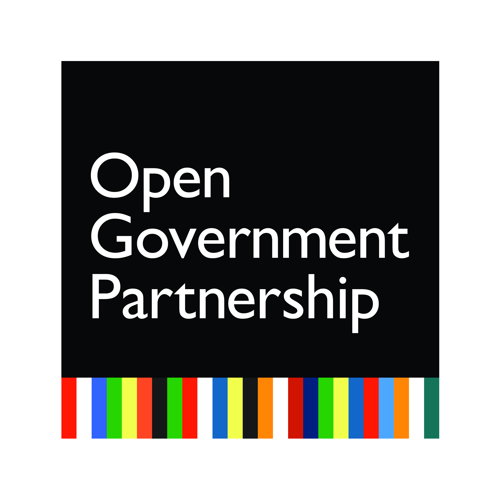

Open and Smart: The Evolution of Open Cities.
The OCS will take place the Monday before IODC18, September 25th, 2018 at Centro Metropolitano de Diseño.
The OCS will aim to:
- Reflect on challenges and opportunities since the last Open Cities Summit in 2016
- Provide a forum and space for advancing discussion about and action on open cities
- Create and publish action steps to advance the open cities movement
- Create a roadmap to achieve the action steps through collaborative work
The OCS will bring together:
- Civil servants, CSOs, and NGOs working at the local / city level
- Subject matter experts working in the field of Smart Cities and E-Government
- Researchers interested in Open Data and Public Sector Innovation
- Anyone who is passionate about using data and open principles to create positive change at the city level.
Structure
The summit will be structured as an all-day open conference and workshop
In the morning,
speakers, panels, and small group discussions will focus on how open cities are or are not improve the lives of people.
In the afternoon,
participants in the summit will be working in groups to ideate solutions to overcome challenges identified at the 2016 OCS and in the morning sessions.
Finally,
there will be open space for discussion on successes and challenges of open cities, followed by a social gathering.
Programme - To Be Announced
Primary Support

Collaborating Organizations


...and more to be added soon!
Contact
If you are interested in participating or helping to organize the summit, please send us an email at opencitiessummit@gmail.com